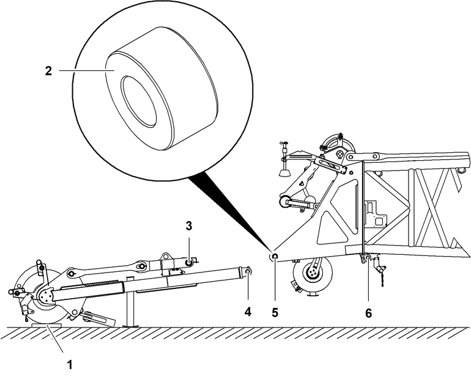
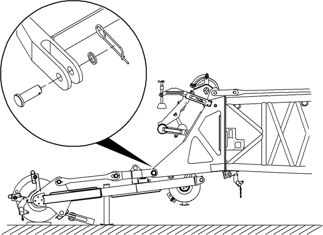
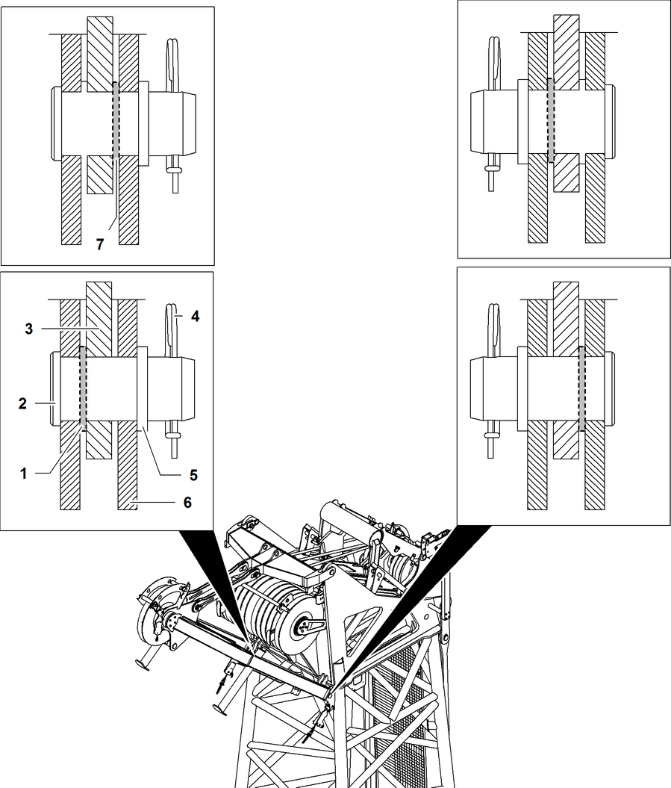

Spitzenausleger (36 t (79300 lb)) an Hauptausleger-Kopf anbauen
Sicherstellen, dass die Halterung der Kamera (wenn vorhanden) am Hauptausleger-Kopf demontiert ist.

Fig. 4907: Spitzenausleger (36 t (79300 lb)) vor Hauptausleger-Kopf positionieren und Buchsen einsetzen (Prinzipdarstellug)
Fig. 4907: Spitzenausleger (36 t (79300 lb)) vor Hauptausleger-Kopf positionieren und Buchsen einsetzen (Prinzipdarstellug)
Kantholz | |
Buchse (Ø80 mm (3.15 in) x Ø40 mm (1.57 in) x 43 mm (1.69 in)) (2x) | |
Oberer Verbolzungspunkt Spitzenausleger (2x) | |
Unterer Verbolzungspunkt Spitzenausleger (2x) | |
Oberer Verbolzungspunkt Hauptausleger-Kopf (2x) | |
Unterer Verbolzungspunkt Hauptausleger-Kopf (2x) |
Spitzenausleger vor Hauptausleger-Kopf positionieren. |
Seilrolle schützen: Kantholz 1 unter Seilrolle von Spitzenausleger legen. |
Buchsen (Ø80 mm (3.15 in) x Ø40 mm (1.57 in) x 43 mm (1.69 in)) in obere Verbolzungspunkte 5 des Hauptausleger-Kopfes einsetzen. |
Hauptausleger anheben und an Spitzenausleger heranfahren bis obere Verbolzungspunkte 3 des Spitzenauslegers mit oberen Verbolzungspunkten 5 des Hauptausleger-Kopfs übereinstimmen. |

Fig. 4908: Obere Verbolzungspunkte verbolzen (Prinzipdarstellug)
Fig. 4908: Obere Verbolzungspunkte verbolzen (Prinzipdarstellug)
Obere Verbolzungspunkte verbolzen und mit Scheibe und Sicherungsfeder sichern. |
Die Beilegscheibe 8 mm (0.31 in) 1 dient zur Zentrierung des Spitzenauslegers am Hauptausleger-Kopf.
ACHTUNG
Falsche Positionierung der Haltestangen des Spitzenauslegers!
Beschädigung des Spitzenauslegers und der Seilrollen am Hauptausleger-Kopf.
Sicherstellen, dass Haltestangen des Spitzenauslegers nach oben klappen. |
Hauptausleger an Spitzenausleger heranfahren bis untere Verbolzungspunkte 4 des Spitzenauslegers mit unteren Verbolzungspunkten 6 des Hauptausleger-Kopfs übereinstimmen. |

Fig. 4910: Einbauhinweis Spitzenausleger (Prinzipdarstellug)
Fig. 4910: Einbauhinweis Spitzenausleger (Prinzipdarstellug)
Unterlegscheibe 8 mm (0.31 in) (Einbauort außen) (2x) | |
Bolzen (2x) | |
Verbolzungslasche Spitzenausleger (2x) | |
Sicherungsfeder (2x) | |
Unterlegscheibe (2x) | |
Verbolzungslasche Hauptausleger-Kopf (4x) | |
Unterlegscheibe 8 mm (0.31 in) (Einbauort innen) (2x) |
Die Unterlegscheiben 8 mm (0.31 in) müssen beidseitig außen (Einbauort außen 1) oder beidseitig innen (Einbauort innen 7) montiert werden.
Bolzen 2 und Unterlegscheibe 8 mm (0.31 in) 1 durch Verbolzungslasche 3 und Verbolzungslasche 6 stecken. |
Unterlegscheibe 5 auf Bolzen 2 stecken und mit Sicherungsfeder 4 sichern. |
Untere Verbolzungspunkte verbolzt und gesichert. |